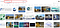

If You don’t know what tomorrow is made of I do


Tomorrow is made of powerful tribes of people connected by technology.
Those tribes will shape our world with their interests, passions, and believe. I am glad and happy to know that they have good interests and passion and thrive to make this world a better have for us human beings. A world of scaled connections that raise the status of each part of the transactions that happen once the connection is made. This is the best if the connection economy we are living know. You may think that connection economy has nothing to do with search engines and raking but know that search engines will start to score better websites that will make internet users make economy by lowering network traffic volume because network operators are billing in network volume. These search engines will also score faster-rendering websites because time is being a more and more scarce resource for people.
Google is realising soon an update to its ranking algorithm and will integrate CWV score. If you don't act now by optimizing your website for speed and data volume transfer you will for sure lose your ranking place.
Act on this now